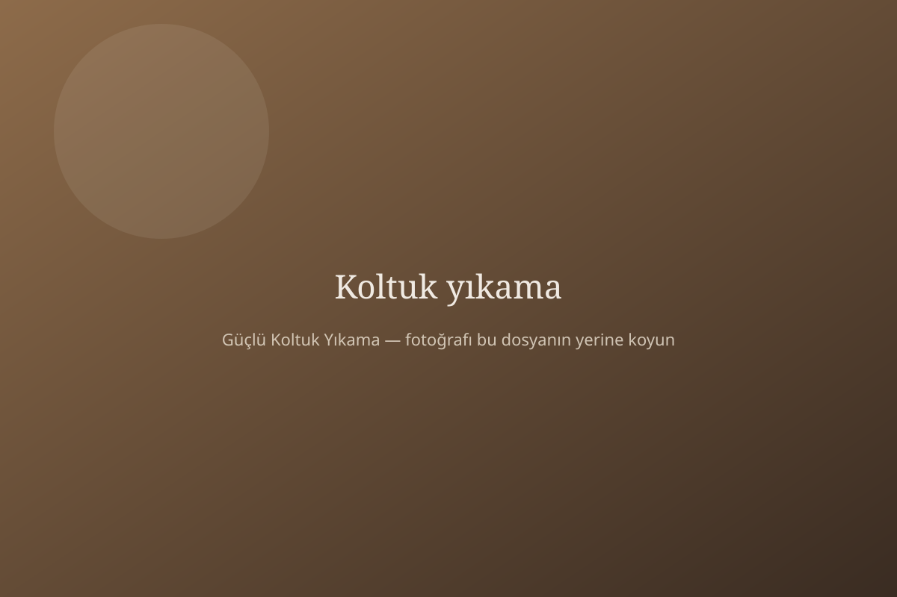
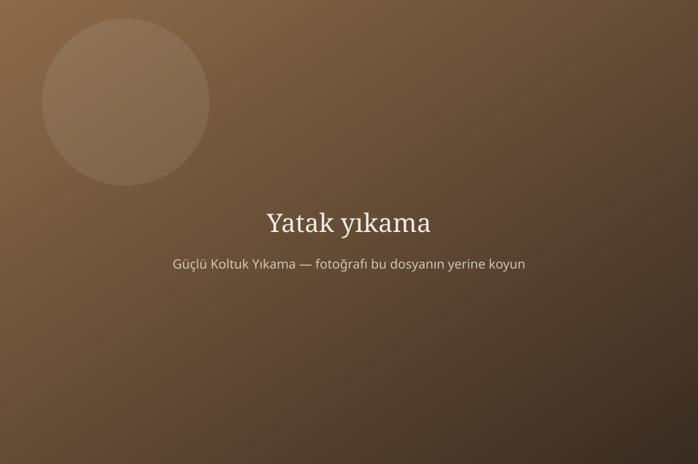
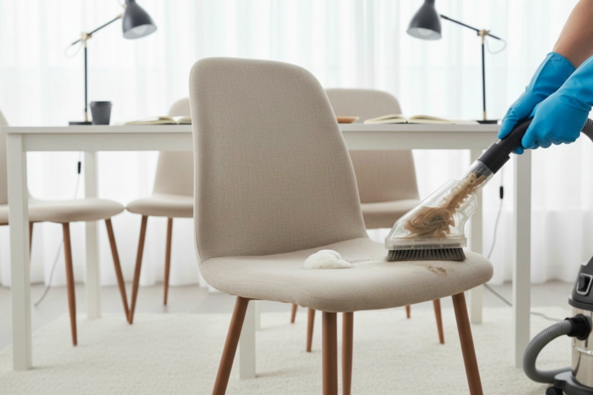
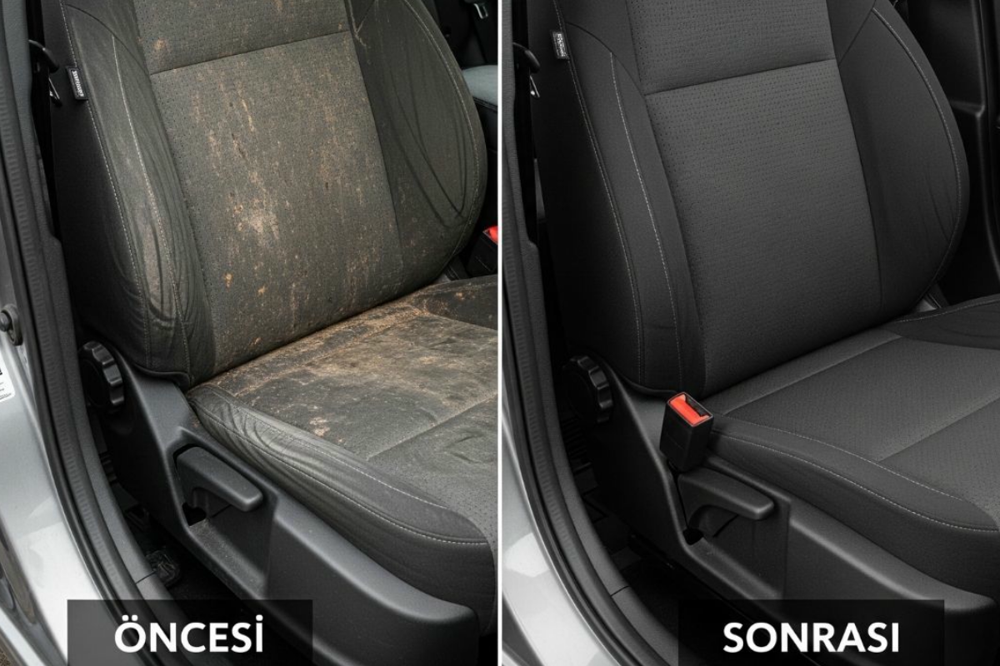

En çok istenen
Koltuk yıkama
Oturma grubu evin kalbidir. Üzerinde yemek yenir, misafir ağırlanır, çocuk uzanır, kedi tüy bırakır. Görünen leke buzdağının ucudur; asıl kir kumaşın altındaki toz, ter ve koku tabakasıdır.
Kumaş, deri, nubuk, kadife, keten ve mikrofiber için ayrı yöntem kullanırız. Çay, kahve, meyve suyu, yağ ve evcil hayvan lekelerinde önce nokta işlem, sonra tüm yüzeye buharlı yıkama uygulanır. Amaç “ıslak görünsün” değil; kumaşın içinin gerçekten temizlenmesi.
- Yerinde uygulama — koltuklar asla taşınmaz
- Doğal şampuan, kalıntı ve ağır koku bırakmaz
- Renk canlanır, kumaş eli daha ferah gelir
- Kuruma çoğu evde 4–6 saat
Koltuk için fiyat al

Uyku hijyeni
Yatak yıkama
Yatağın kılıfını değiştirmek yüzeydeki kiri alır; içindeki nem, ter ve akar kalır. Özellikle Antalya’nın nemli aylarında yatak kokusu “oda kokusu” sanılır. Kaynak çoğu zaman yataktır.
Yerinde yatak yıkamada hedefimiz kılıfı ıslatıp bırakmak değil: emiş gücünü kullanarak kir ve nemi dışarı almak, sonra kontrollü kurutma ile küf kokusunun oluşmasını önlemek. Bebek yatağı ve misafir odası yatakları da aynı özenle yıkanır.
- Akar ve alerjen yükünü azaltmaya yönelik derin temizlik
- Koku kaynağına inen buhar + vakum sırası
- Yatak yerinden çıkarılmaz
- Aynı randevuda koltukla birlikte planlanabilir
Yatak için fiyat al

Yemek masası ve ofis
Sandalye ve berjer yıkama
Sandalye lekesi koltuktan daha inatçıdır: yağ, sos, çay damlası kumaşa dik işler. Ev, ofis ve restoran sandalyelerinde yerinde, hızlı ve kumaşa özel çalışırız. Berjerler de aynı gruptadır; tek parça gibi görünür ama süngeri ve kumaşı ayrı bakım ister.
Toplu sandalye (6–8–12’li takımlar) için süre baştan konuşulur. İşletmelerde açılış saatine göre sabah erken veya kapalı gün planlanabilir.
- Yerinde hızlı uygulama
- Yağ ve yemek lekelerine ön işlem
- Restoran, kafe ve ofis takımları
Sandalye için fiyat al

Araç içi
Araç koltuğu temizliği
Araçtaki koku çoğu zaman klimadan değil, kumaşın içindeki organik kirden gelir. Çocuk koltuğu kırıntısı, yaz sıcağında ter, evcil hayvan tüyü… Yüzey spreyi kokuyu gizler; biz kaynağı alırız.
Kumaş ve deri koltuklarda vakum, buhar ve kontrollü kurutma sırası uygulanır. Mümkünse aracı gölgede, havalandırılabilir bir yerde çalışmayı tercih ederiz. Detayı WhatsApp’tan konuşuruz.
- Kumaş ve deri koltuk
- Koku giderme, ferah iç hacim
- Buharlı ve vakumlu sistem
Araç için fiyat al